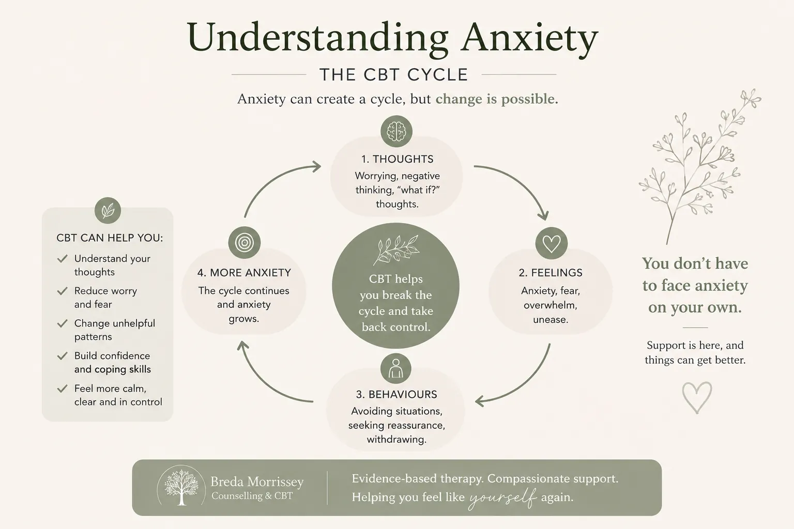
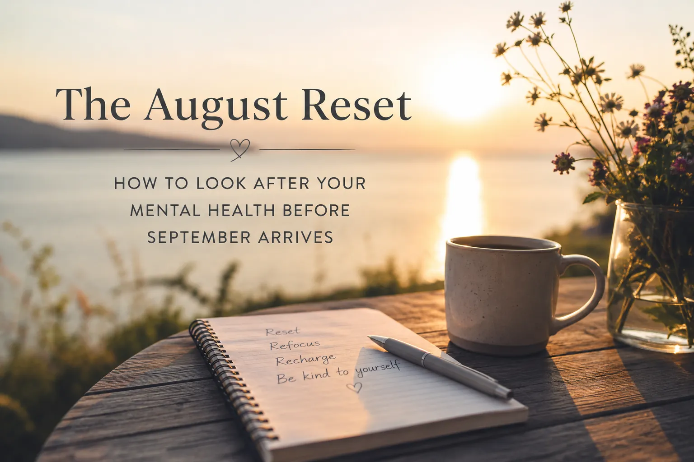
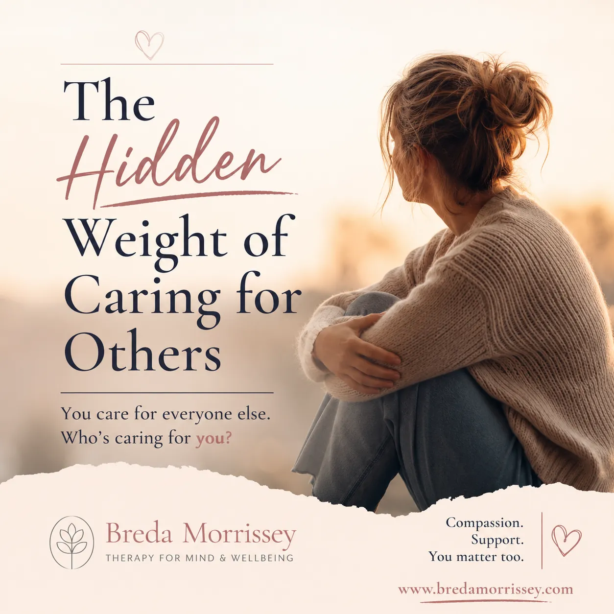
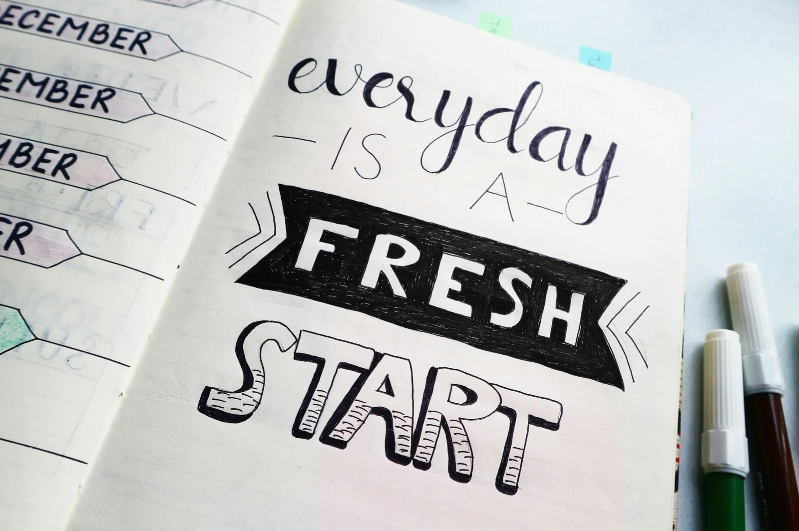

Home / Blog
The blog
Tips for stress, anxiety & your wellbeing
Practical CBT insights and gentle ideas to help you feel calmer and more in control, written by Breda Morrissey.

Online CBT for Anxiety: How It Can Help You Feel More in Control
How CBT works for anxiety, what happens in online sessions, and a small step you can try today.
Read the articleSupporting Dementia Caregivers: A Guide to CBT and ACT Therapies
Feeling overwhelmed, exhausted or guilty does not mean you are failing. It means you are human, and you deserve support too.
Read article
The August Reset: How to Look After Your Mental Health Before September Arrives
Feeling like summer has passed too quickly? A gentle reset for anxiety, stress and overthinking before September.
Read article
The Hidden Weight of Caring for Others
You spend your time caring for others. The signs of carer burnout and how to look after yourself too.
Read articleHow to Stop Overthinking Everything (Even When Your Mind Won't Switch Off)
Why we overthink, why it keeps us stuck, and five gentle ways to step out of the loop.
Read articleJanuary Without the Pressure: CBT & Counselling Support for a Gentler Start to the Year
A gentler approach to the new year, without resolutions that add pressure.
Read articleFinding Calm in the Christmas Season
It's okay if Christmas doesn't feel perfect. A little CBT wisdom for the holidays.
Read article
September Reset: Embracing CBT, Mindfulness & Counselling
Settling into a new season with CBT, mindfulness and counselling support.
Read articleCoping with Exam Stress & Supporting a Loved One Through Exams
Practical ways to manage exam pressure, for students and the people supporting them.
Read articleDo You Overthink?
What happens when we overthink, and some techniques to help.
Read article